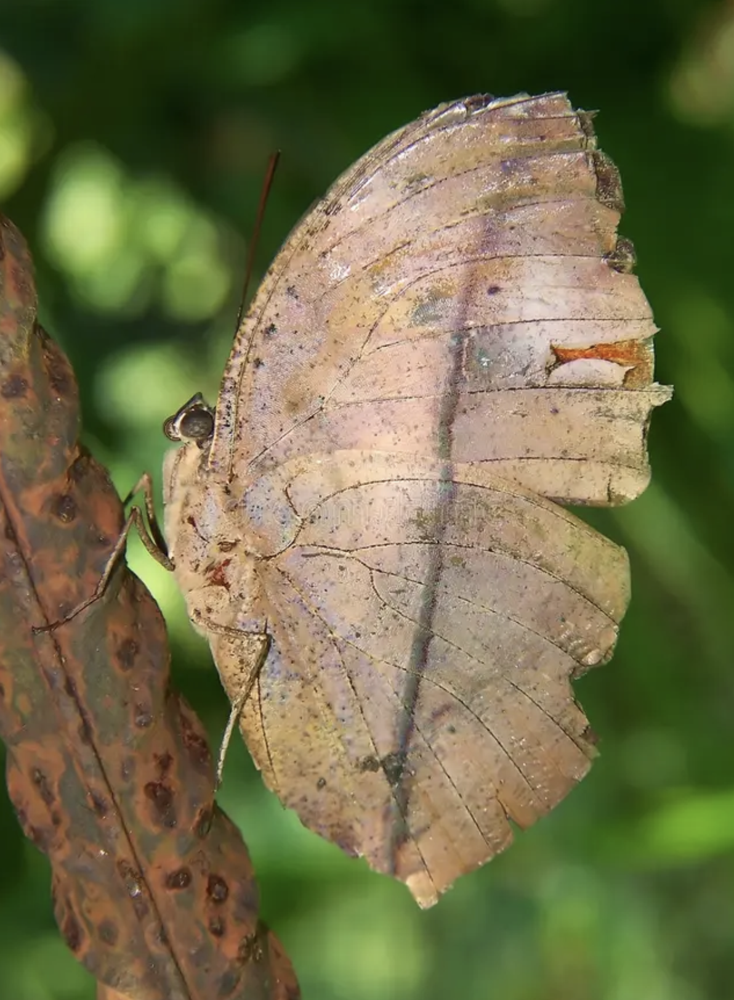

MARIPOSA HOJA SECA COMÚN
Gastropacha quercifolia

Su apariencia le permite integrarse con el entorno y pasar desapercibida ante los depredadores.
- Nombre científico: Gastropacha quercifolia
- Camuflaje: Utiliza su apariencia para integrarse con el entorno y pasar desapercibida ante los depredadores.
- Hábitat: Bosques densos, selvas tropicales y zonas arboladas de Europa y Asia.
- Sentido: Visión.
- Uso: Supervivencia.
- Función: Ocultamiento.